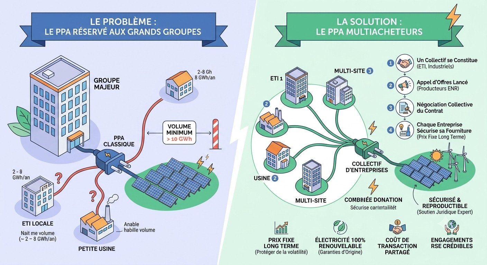

Le PPA — contrat d'achat direct d'électricité renouvelable à prix fixe et long terme — est aujourd'hui l'un des outils les plus puissants pour sécuriser son approvisionnement et afficher des engagements crédibles de décarbonation. Mais il reste inaccessible à la plupart des ETI et des industriels de taille intermédiaire, faute d'un volume de consommation suffisant. Nous avons décidé de changer ça.

Le problème : le PPA, réservé aux grands volumes
Un PPA classique exige un volume minimal de consommation — généralement entre 10 et 30 GWh par an selon les producteurs. En dessous de ce seuil, les producteurs d'énergie renouvelable n'ont pas d'intérêt économique à contractualiser directement avec un acheteur unique : le coût de transaction est trop élevé au regard du volume sécurisé.
Résultat : les grands groupes industriels ont accès à cet outil depuis plusieurs années, tandis que la très grande majorité des ETI, des industriels régionaux et des acteurs multi-sites en sont structurellement exclus — même lorsque leur consommation est significative (2 à 8 GWh/an).
Le paradoxe du PPA
Une entreprise qui consomme 5 GWh/an veut se décarboner et sécuriser son prix sur 15 ans — mais aucun producteur ne peut lui proposer un PPA viable individuellement. C'est précisément ce cas que le contrat multiacheteurs résout.
La solution : mutualiser pour atteindre la taille critique
Le principe du contrat multiacheteurs est simple : plusieurs entreprises qui, individuellement, n'atteignent pas le seuil nécessaire, se regroupent pour constituer collectivement un volume suffisant. Chaque entreprise contractualise individuellement sa part — mais la négociation, la sélection du producteur et la structuration juridique sont menées une seule fois pour l'ensemble du collectif.
Territoire Avenir Énergie : premier dispositif structuré en France
C'est dans cette logique que GREENBIRDIE a fondé Territoire Avenir Énergie, marque déposée et premier dispositif structuré de contrats PPA multiacheteurs en France, développé en partenariat avec le cabinet Mutandis avocats, spécialisé en droit de l'énergie.
La particularité de ce dispositif tient à sa structuration juridique : le contrat multiacheteurs n'est pas un simple groupement d'achat. C'est un cadre contractuel inédit qui organise les droits et obligations de chaque acheteur, les mécanismes de solidarité en cas de défaillance d'un membre, et les relations avec le producteur sélectionné — le tout dans un cadre sécurisé et reproductible d'une édition à l'autre.
à prix fixe
par le collectif (éd. 2)
ou en préparation
Pourquoi ce modèle change la donne
Le contrat multiacheteurs ouvre plusieurs bénéfices simultanément pour les entreprises participantes :
- Accès au prix fixe long terme — se prémunir contre la volatilité des marchés de gros sur 15 ans
- Électricité 100 % renouvelable traçable — garanties d'origine associées, contributif au développement ENR local
- Coût de transaction partagé — la complexité juridique et opérationnelle est mutualisée entre membres
- Engagements RSE crédibles — un contrat direct avec un producteur, plus solide qu'un simple certificat d'énergie renouvelable
- Ancrage territorial — les éditions sont conçues en priorité pour les entreprises de Nouvelle-Aquitaine et des territoires limitrophes
Pour qui ?
Territoire Avenir Énergie s'adresse aux ETI et entreprises industrielles qui :
- Consomment entre 2 et 10 GWh/an d'électricité (en dessous du seuil PPA individuel)
- Souhaitent sécuriser une part de leur approvisionnement à prix fixe et long terme
- Ont des objectifs de décarbonation à tenir (CSRD, SBTi, engagements clients)
- Sont implantées en France métropolitaine, avec une priorité aux acteurs de Nouvelle-Aquitaine
Le programme est également ouvert aux producteurs d'énergie renouvelable souhaitant répondre à l'appel d'offres et sécuriser un débouché commercial de long terme.
Volume visé : 10 à 13 GWh/an. Territoire prioritaire : Nouvelle-Aquitaine et Pays Basque. L'appel d'offres producteurs est également ouvert.
Le rôle de GREENBIRDIE dans le dispositif
GREENBIRDIE intervient comme coordinateur du programme (AMO) : constitution du collectif, rédaction et animation de l'appel d'offres producteurs, analyse des offres, accompagnement à la négociation et suivi contractuel. La structuration juridique du contrat multiacheteurs est assurée par le cabinet Mutandis avocats.
Cette organisation garantit l'indépendance du dispositif vis-à-vis de tout fournisseur ou producteur : GREENBIRDIE défend les intérêts des acheteurs membres, sans conflit d'intérêt avec la partie productrice.